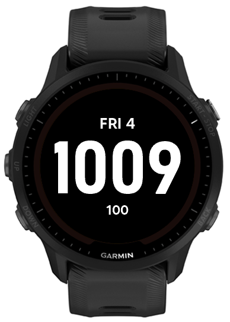

Four digits, no colon
Twenty-four-hour time removes the need for AM or PM. Dropping the colon leaves more room for the numbers, which matters on a round screen.
I could not find a Garmin face that showed only what I wanted, so I made one. It shows the time, date, and battery percentage, and nothing else.

I switched from an Apple Watch to a Garmin because I wanted a watch that felt more like a tool and less like another phone. Most available faces still put far more information on screen than I wanted.
My requirements were specific. I wanted four-digit 24-hour time, the day and date, and an exact battery percentage. Everything would be white on black. I did not want a colon, icons, fitness rings, weather, animation, seconds, or anything that required a tap.
With only three values on screen, small choices became obvious. Font width affected the largest possible time size. Vertical spacing affected how quickly I could read the face. Update frequency affected how much work the watch performed throughout the day.
The time is by far the largest element. The date sits above it, and the battery sits below it. I can glance at the face and find the right value without scanning a grid of complications.
Twenty-four-hour time removes the need for AM or PM. Dropping the colon leaves more room for the numbers, which matters on a round screen.
The abbreviated weekday and date stay centered above the time. They are easy to find but small enough that the time still reads first.
A percentage tells me more than a small battery icon. A setting lets me hide the percent sign if I want an even cleaner display.
The default has maximum contrast and matches the rest of my watch setup. Color settings are there for people who want them, but the basic face stays plain.
Garmin can call the face several times after a wrist gesture. The Forerunner 955 still needs a complete frame each time, but the strings behind that frame usually have not changed.
The normal update path makes one clock query, then reuses the cached time, date, and battery strings when their refresh boundary has not arrived. The bitmap fonts are hard-edged 1-bit resources, and they stay loaded outside the screen-update hot path.
// Simplified rendering strategy
if (minuteChanged) formatTime();
if (hourChanged) {
formatDate();
formatBattery();
}
draw(cachedDate, cachedTime, cachedBattery);Connect IQ handles fonts, resources, packaging, and updates differently from a web project. The round display also gives every line of text a hard width limit. I used the simulator while iterating, then installed each serious version on my Forerunner 955 to check spacing and readability on the real screen.
The finished face gives me the three things I check most often. I do not have to open a widget, dismiss anything, or search through extra data.
I can explain why the code avoids unnecessary formatting and resource work. I have not completed a controlled battery comparison against a stock Garmin face, so I do not claim a measured battery-life improvement. That test is still on my list.
The time, date, and battery do not need the same formatting or refresh schedule.
Less information gave me more room for the values I actually wanted to read.
The simulator was useful, but the physical watch exposed spacing and readability issues more clearly.
I need a controlled comparison before attaching a number to the battery impact.